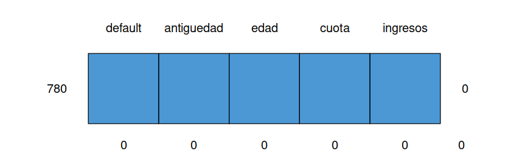
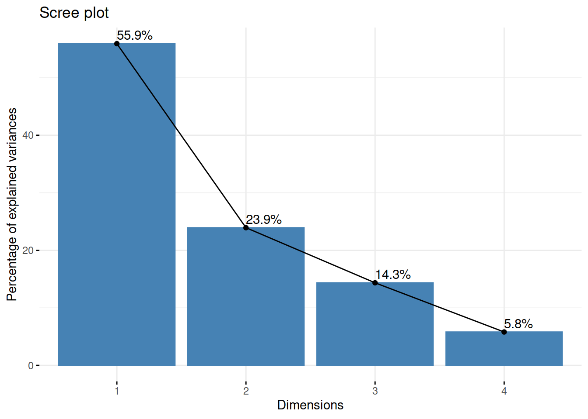
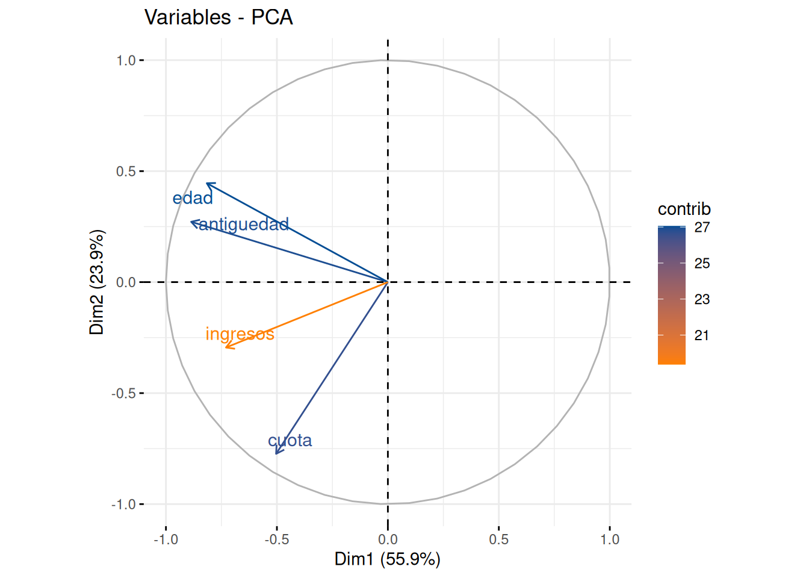
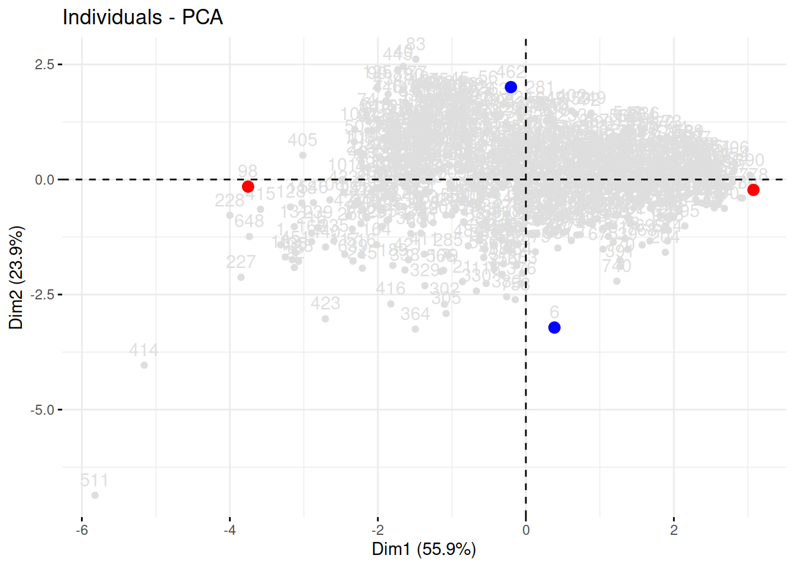
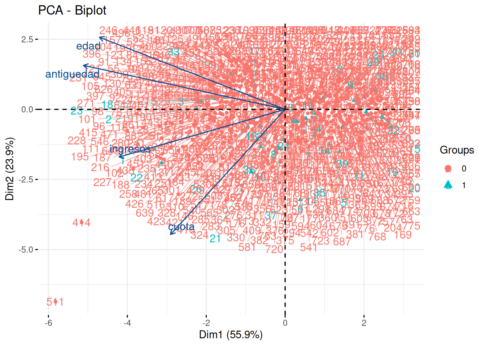

La siguiente base de datos corresponde a información relacionada con el comportamiento crediticio de un grupo de 780 clientes de un banco
Se requiere resumir las variables cuantitativas (antigüedad, edad, cuota e ingresos) en por lo menos dos variables (componentes principales) y poder así adicionar elementos al análisis
library(paqueteMODELOS)
data("creditos") # base de datos
creditosZ= scale(creditos) # datos estandarizados
str(creditos)Show in New Window tibble [780 × 5] (S3: tbl_df/tbl/data.frame) $ default : num [1:780] 1 1 1 1 1 1 1 1 1 1 ... $ antiguedad: num [1:780] 37.32 37.32 30.98 9.73 8.44 ... $ edad : num [1:780] 77 73.8 78.9 51.5 39 ... $ cuota : num [1:780] 3020519 1766552 1673786 668479 1223559 ... $ ingresos : num [1:780] 8155593 6181263 4328075 5290910 5333818 ...
Inicialmente revisemos si existen datos faltantes
library(mice)
md.pattern(creditos)
La gráfica indica que no se presentan datos faltantes
Con el fin de evitar que las variables que tiene una escala con valores más grandes afecten las estimaciones realizadas (sesgos) se realiza la estandarización de las variables antes de proceder a realizar el proceso de estimación de los componentes principales.
library(tidyverse)
creditosZ= creditos[2:5] %>%
scale()
head(creditosZ) # primeros 6 registrosantiguedad edad cuota ingresos [1,] 1.6150493 1.5992045 2.8847306 1.05164674 [2,] 1.6150493 1.3426559 1.1906667 0.30723062 [3,] 1.0840529 1.7554121 1.0653432 -0.39150920 [4,] -0.6957258 -0.4363146 -0.2927901 -0.02847471 [5,] -0.8033479 -1.4406004 0.4571028 -0.01229636 [6,] -0.9573230 -0.9680340 3.5564797 -1.00132277
prcomp(creditosZ)Standard deviations (1, .., p=4):
[1] 1.4956195 0.9783699 0.7576046 0.4816118
Rotation (n x k) = (4 x 4):
PC1 PC2 PC3 PC4
antiguedad -0.5926455 0.2777622 0.1520487 -0.74060831
edad -0.5454793 0.4553210 0.2485578 0.65829634
cuota -0.3367282 -0.7905281 0.5057479 0.07680159
ingresos -0.4876861 -0.3009920 -0.8119848 0.11066515library(paqueteMODELOS)
data("creditos")
creditosZ= scale(creditos[,2:5])
res.pca <- prcomp(creditosZ)
fviz_eig(res.pca, addlabels = TRUE)
En este caso el primer componente principal explica el 55.9% de la variabilidad contenida en la base de datos y entre los dos primeros se casi el 80% de los datos (79.8), lo cual indicaría que con solo una variable (CP1) que se obtiene mediante una combinación lineal de las variables se puede resumir gran parte de la variabilidad que contiene la base de datos.
fviz_pca_var(res.pca,
col.var = "contrib", # Color by contributions to the PC
gradient.cols = c("#FF7F00", "#034D94"),
repel = TRUE # Avoid text overlapping
)
Al visualizar las variables en el plano de los componentes principales permite identificar el sentido y la caracterización de los componentes (característica capturada por los vectores propios de \(\Sigma\)). En este ejercicio el primer componente principal está asociado principalmente con la variables edad y antigüedad, mientras que el segundo componente se puede asociar a la variable cuota
Para explicar el sentido de los ejes, se escogen cuatro casos extremos conformados por los siguientes clientes
datos<- rbind(creditos[98,], # ok
creditos[778,],
creditos[6,],
creditos[462,])
datos <- as.data.frame(datos)
rownames(datos) = c("Cliente 098","Cliente 778","Cliente 006","Cliente 462")
datos default antiguedad edad cuota ingresos
Cliente 098 0 27.358904 74.30685 170024 20924813
Cliente 778 0 1.517808 26.61370 9256 2473929
Cliente 006 1 6.605479 44.87945 3517756 2710736
Cliente 462 0 26.380822 73.40548 69483 2335189casos1 <- rbind(res.pca$x[98,1:2],res.pca$x[778,1:2]) # CP1
rownames(casos1) = c("98","299")
casos1 <- as.data.frame(casos1)
casos2 <- rbind(res.pca$x[6,1:2], res.pca$x[462,1:2]) # CP2
rownames(casos2) = c("6","190")
casos2 <- as.data.frame(casos2)
fviz_pca_ind(res.pca, col.ind = "#DEDEDE", gradient.cols = c("#00AFBB", "#E7B800", "#FC4E07")) +
geom_point(data = casos1, aes(x = PC1, y = PC2), color = "red", size = 3) +
geom_point(data = casos2, aes(x = PC1, y = PC2), color = "blue", size = 3)
default antiguedad edad cuota ingresos Cliente 098 0 27.358904 74.30685 170024 20924813 Cliente 778 0 1.517808 26.61370 9256 2473929 Cliente 006 1 6.605479 44.87945 3517756 2710736 Cliente 462 0 26.380822 73.40548 69483 2335189
El cliente 098 presenta altos ingresos ($20’924.813), mientras que el cliente 778 que se encuentra ubicado al otro extremo presenta bajos ingresos ( $2’473.929). Esto muestra el sentido en que aumentan los valores del primer componente principal (Dim1).
Aun más dado que el primer componente no solo está conformado por la variable ingresos, sino que se trata de una combinación lineal de todas las variables donde se destaca (presenta mayor pesos) los ingresos se puede analizara que mientras el cliente 098 presenta una relación cuota/ingresos de $170.024/$20’924.813 = 0.008125473 , el cliente 299 que se encuentra al otro extremo de la recta presenta una relación $727.995 / 848.487 = 0.8579919 .
Lo mismo ocurre al comparar el clientes 006 (cuota = $3’517.756) con cliente190 (cuota = $103.855)
datos<- rbind(creditos[98,],
creditos[293,],
creditos[6,],
creditos[190,])
datos# A tibble: 4 × 5
default antiguedad edad cuota ingresos
<dbl> <dbl> <dbl> <dbl> <dbl>
1 0 27.4 74.3 170024 20924813
2 0 3.52 35.0 161412 3093808
3 1 6.61 44.9 3517756 2710736
4 0 27.8 54.0 103855 12303025fviz_pca_biplot(res.pca,
repel = TRUE,
habillage = creditos$default,
col.var = "#034A94", # Variables color
col.ind = c("#DEDEDE", "#034A94") # Individuals color
)
La representación gráfica de los dos primeros componentes principales nos permite observar la relación existente entre las variables : edad y antigüedad, formando un grupo que presenta un mayor efecto sobre el primer componente, mientras que la variable cuota presenta un mayor efecto sobre el segundo componente.
Para la variables contenidas en la base de datos
rotacion de paqueteMODELOS, determine si es
posible construir dos variables (componentes principales) que permitan
reducir un grupo de variables sin perder información.
library(paqueteMODELOS)
data(rotacion)